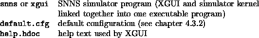

The graphical user interface consists of the following files:

The file snns in the home directory of SNNS is only a symbolic link to the file
xgui/bin/<architecture>/xgui
where <architecture> is one of the currently supported machine architectures, like dec_alpha, dec_mips, hp_ux, ibm_aix, sgi_irix, pc_linux, sun_os4x, or sun_solaris.
The file Readme_xgui contains changes performed after printing
of this document. The user is urged to read it, prior to using
XGUI. The file help.hdoc is explained in
chapter  .
.
XGUI looks for the files default.cfg and help.hdoc first in the current directory. If not found there, it looks in the directory specified by the environment variable XGUILOADPATH. By the command
setenv XGUILOADPATH Path
this variable can be set to the path where default.cfg and help.hdoc are located. This is best done by an entry to the files .login or .cshrc. Advanced users may change the help file or the default configuration for their own purposes. This should be done, however, only on a copy of the files in a private directory.
SNNS uses the following extensions for its files:
.net network files (units and link weights)
.pat pattern files
.cfg configuration settings files
.txt text files (log files)
.res result files (unit activations)
A simulator run is started by the command
snns [<netfile>.net] [<pattern>.pat] [<config>.cfg] [options]
where valid options are
-font <name> : font for the simulator
-dfont <name> : font for the displays
-mono : black & white on color screens
-help : help screen to explain the options
in the home directory of SNNS or by directly calling
<SNNS-directory>/xgui/bin/<architecture>/xgui
from any directory. Note that the shell variable XGUILOADPATH must be set properly before, or SNNS will complain about missing files default.cfg and help.hdoc.
The executable xgui may also be called with X-Window parameters as arguments.
Setting the display font can be advisable, if the font selected by the SNNS automatic font detection looks ugly. The following example starts the display with the 7x13bold font
snns -font 7x13bold
The fonts which are available can be detected with the program xfontsel (not part of this distribution). The current version of SNNS can not handle fonts wider than 8 pixels.